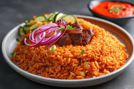

Ghanaian Jollof Rice

Description
Ghanaian Jollof Rice is a beloved West African dish made by cooking rice in a rich
tomato-based sauce, infused with spices and vegetables. It's often served with
fried plantains, salad, or grilled meat.
Ingredients:
- 2 cups long-grain rice
- 4 fresh tomatoes (blended)
- 1/2 cup tomato paste
- 1 onion (sliced)
- 1 red bell pepper (blended)
- 2 cloves garlic (minced)
- 1 tsp ground ginger
- 1 tsp curry powder
- 1 tsp thyme
- Salt to taste
- 2 stock cubes
- 1/4 cup vegetable oil
- 2 cups chicken or vegetable stock
Steps:
- Heat oil in a pot and sauté onions until translucent.
- Add garlic, ginger, and tomato paste. Cook for 3 minutes.
- Add blended tomatoes and pepper. Let it simmer for 10–15 minutes.
- Season with curry, thyme, stock cubes, and salt.
- Add washed rice and stir to coat with the sauce.
- Pour in stock, cover, and cook on low heat until rice is done and fluffy.
- Serve hot with fried plantains, grilled chicken, or salad.
Back To Home Page